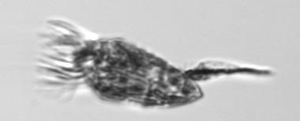
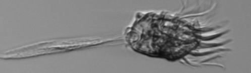
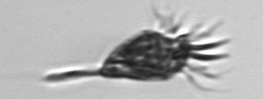
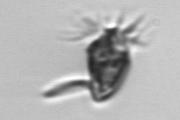

Tontonia_appendiculariformis
-note long, thin apendage-ciliate usually see spread out-Length without appendage is about 35µm
IFCB1_2011_240_171508_04987

IFCB5_2013_067_230254_00318

IFCB5_2015_323_165219_03858

IFCB1_2006_280_015132_03548

IFCB1_2006_272_024038_00484
